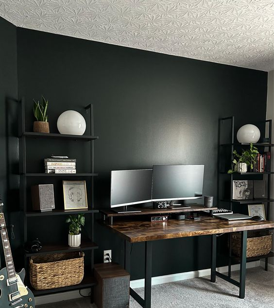

About Me
I am passionate abaout data analysis with a keen eye
for extracting insights from complex datasets. I have a strong background in statistics and a knack for
turning raw data into meaningful stories. My analytical skills allow me to identify patterns, trends,
and correlations, helping organizations make data-driven decisions. With expertise in Python, R, and SQL,
I am adept at wrangling data, conducting statistical analysis, and creating visualizations to effectively
communicate findings. I thrive in collaborative environments, where I can work closely with cross-functional
teams to solve challenging problems. My goal is to leverage data to uncover
valuable insights that drive business growth and optimize processes.
Let's connect and unlock the power of data together!
Educational Background
Currently I am a student at Strathmore University undertaking the BBIT undergraduate Degree
Skills
My skillsets are :
Interests
My interests are Baking,Outdoor designing and landscaping